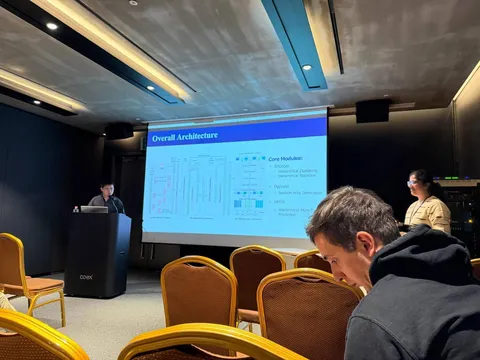
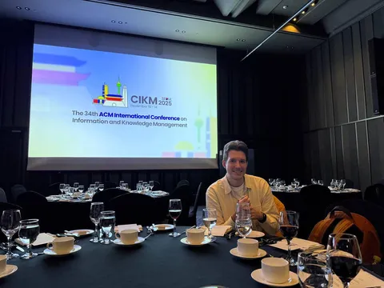
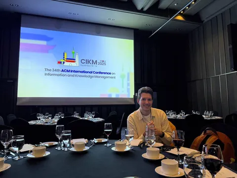
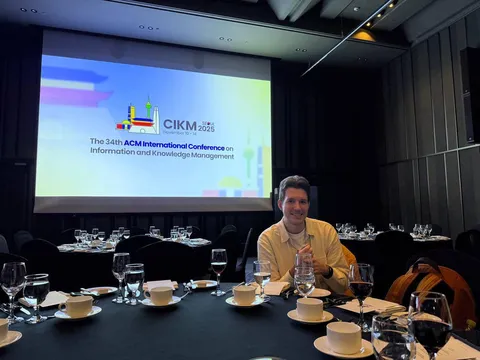

По наблюдению наших инженеров, в этом году хорошие доклады на CIKM распределены крайне неравномерно: в одни тайм-слоты интересного мало, зато в другие несколько любопытных работ представляют параллельно. О том, что запомнилось 12 ноября, рассказал разработчик службы рекомендательных технологий Яндекса Иван Артемьев.
Первая половина дня была более спокойной, зато вторая — очень насыщенной, так что пришлось делиться на группы и бегать между комнатами.
В первой половине была одна запоминающаяся статья — DAS: Dual-Aligned Semantic IDs Empowered Industrial Recommender System. Авторы прямо во время обучения семантических ID замешивают коллаборативный сигнал. В дополнении раскладывали на семантики не только айтемы, но и пользователей — и применяли пользовательские ID в рекомендательной системе.
Во второй половине дня было три классных работы.⚫️ MPFormer: Adaptive Framework for Industrial Multi-Task Personalized Sequential Retriever
В статье учат кандидатогенератор, который умеет предсказывать кандидатов для разных таргетов (лайки, клики и прочее) и при этом персонализировано распределяет бюджет на них.⚫️ TBGRecall: A Generative Retrieval Model for E-commerce Recommendation Scenarios Taming Ultra-Long Behavior Sequence in Session-wise Generative Recommendation⚫️ Taming Ultra-Long Behavior Sequence in Session-wise Generative Recommendation
В этих двух работах обучают кандидатогенератор для задачи генерации сессий. При этом в последней — добавляют очень большую историю (до 100 000 айтемов) в сжатом виде, чтобы учитывать долгосрочные интересы пользователей.
@RecSysChannel
 

